Unidad 3: Estimación de esfuerzo y costo de desarrollo
Presentación de unidad
El estudiante conocerá los principales costos necesarios para desarrollar las actividades del proyecto, el
alcance que tendrá y la calidad con la que funciona. El tener esta información y procesarla con las
herramientas adecuadas, dará una visión más clara sobre los costos del proyecto y su tamaño, y de esta manera
contar con los elementos esenciales para la toma de decisiones.
Lo que se busca en esta unidad, es que el estudiante obtenga los conocimientos necesarios que se requieren
para colaborar en la estimación de costos, calidad y tamaño del proyecto.
“Si un proyecto no ha logrado una arquitectura de
sistema, incluida su justificación, el proyecto no debe continuar con el desarrollo del sistema a gran
escala. Especificar la arquitectura como entregable permite su uso durante todo el proceso de desarrollo y
mantenimiento.”
Barry Boehm
Objetivo de
unidad
El estudiante conocerá las diferentes técnicas y metodologías para estimar costos, dentro de un proyecto con
la finalidad de tomar decisiones en la asignación de recursos.
Organizador gráfico de unidad
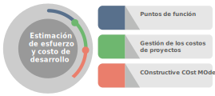
¡Bienvenidos a esta unidad!
3.1 Gestión de los costos de proyectos
El poder administrar de manera correcta los recursos de la empresa, nos traerá mayores beneficios, tener
mayor control y una mejor tomar buenas decisiones, así como obtener mayor rentabilidad e ingresos, por lo que
es de suma importancia analizar el siguiente tema que nos dice:
(PMBOK, 2017), describe la gestión de costos de proyectos como sigue:
La Gestión de los Costos del Proyecto incluye los procesos involucrados en planificar, estimar, presupuestar,
financiar, obtener financiamiento, gestionar y controlar los costos de modo que se complete el proyecto dentro
del presupuesto aprobado. Los procesos de Gestión de los Costos del Proyecto son:
a. Planificar la Gestión de los Costos: Es el proceso de definir como se han
de estimar, presupuestar, gestionar, monitorear y controlar los costos del proyecto.
b. Estimar los Costos: Es el proceso de desarrollar una aproximación de los
recursos monetarios necesarios para completar el trabajo del proyecto.
c. Determinar el Presupuesto: Es el proceso que consiste en sumar los costos
estimados de las actividades individuales o paquetes de trabajo para establecer una línea base de costos
autorizada.
d. Controlar los Costos: Es el proceso de monitorear el estado del proyecto
para actualizar los costos del proyecto y gestionar cambios a la línea base de costos.
La figura 1 brinda una descripción general de los procesos de Gestión de los Costos del Proyecto. Los
procesos de la Gestión de los Costos del Proyecto se presentan como procesos diferenciados con interfaces
definidas, aunque en la práctica se superponen e interactúan entre. Estos procesos interactúan entre sí y con
procesos de otras Áreas de conocimiento.
En algunos proyectos, especialmente en aquellos de alcance más reducido, la estimación de costos y la
preparación del presupuesto en términos de costos están tan estrechamente ligadas que se consideran un solo
proceso, que puede realizar una única persona en un periodo de tiempo relativamente corto.
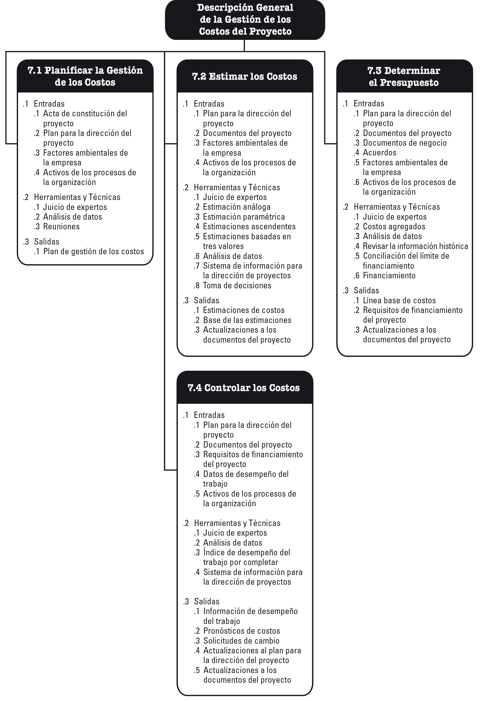
Figura 1 (PMBOK, 2017, pág. 232), Gestión de los costos de proyecto
×
a. Planificar la gestión de los costos: Planificar la gestión de los costos es el proceso de
definir como se han de estimar, presupuestar, gestionar, monitorear y controlar los costos del proyecto. El
beneficio clave de este proceso es que proporciona guía y dirección sobre cómo se gestionaran los costos del
proyecto a lo largo del mismo. Este proceso se lleva a cabo una única vez o en puntos predefinidos del
proyecto.
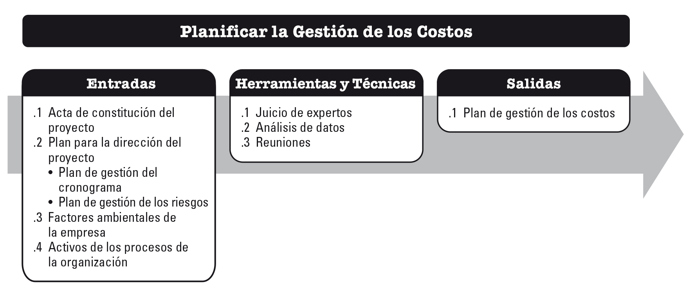
Figura 2. (PMBOK, 2017, pág. 235), Entradas, Herramientas y técnicas y Salidas
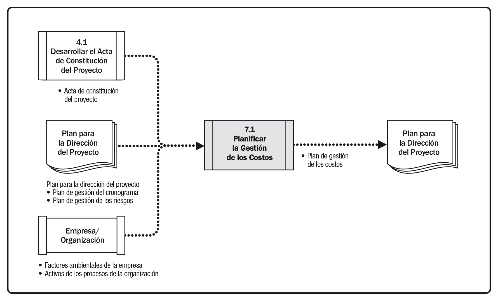
Figura 3. (PMBOK, 2017, pág. 235), Diagrama de flujo de datos
El trabajo de planificación de la gestión de los costos tiene lugar en las etapas iniciales de la
planificación del proyecto y establece el marco de referencia para cada uno de los procesos de gestión de los
costos, de modo que el desempeño de los procesos sea eficiente y coordinado. Los procesos de gestión de los
costos, así como sus herramientas y técnicas asociadas, se documentan en el plan de gestión de los costos. El
plan de gestión de los costos es un componente del plan para la dirección del proyecto. (PMBOK, 2017, págs.
235 - 239)
Se invita al estudiante a revisar detalladamente los conceptos del proceso: “Planificar la gestión de los
costos”, en el libro “A Guide to the Project Management Body of Knowledge” Pmbok Guide 6ª.
Edición Pág. 235 - 239
b. Estimar los costos: Estimar los costos, es el proceso de desarrollar una aproximación del
costo de los recursos necesarios para completar el trabajo del proyecto. El beneficio clave de este proceso es
que determina los recursos monetarios requeridos para el proyecto. Este proceso se lleva a cabo periódicamente
a lo largo del proyecto, según sea necesario
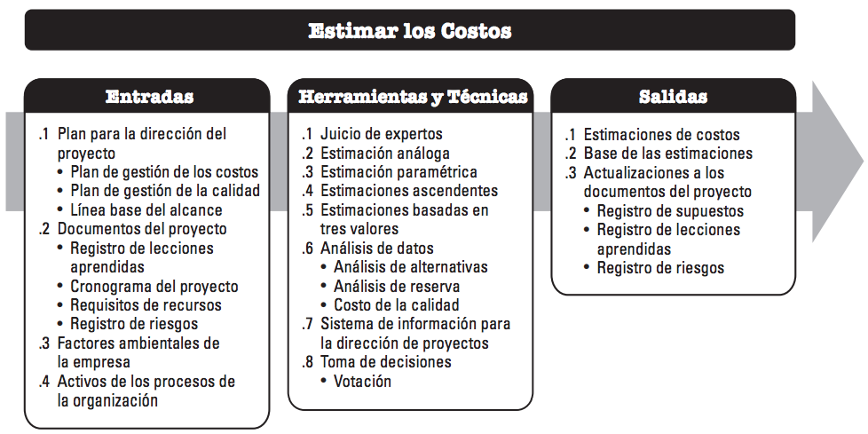
Figura 4. (PMBOK, 2017, pág. 240), Entradas, Herramientas y técnicas y Salidas.
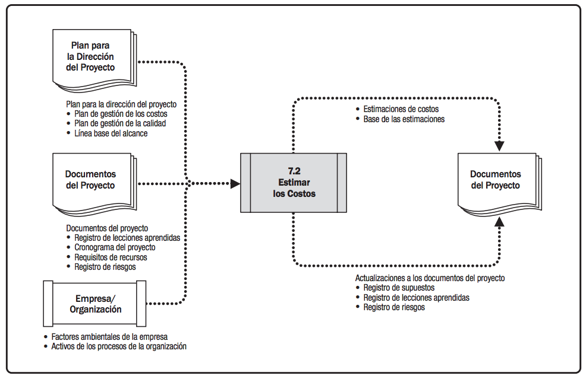
Figura 5. (PMBOK, 2017, pág. 240), Diagrama de flujo de datos.
Una estimación de costos consiste en una evaluación cuantitativa de los costos probables de los recursos
necesarios para completar la actividad. Es una predicción basada sobre la información disponible en un momento
determinado. Las estimaciones de costos incluyen la identificación y consideración de diversas alternativas de
cálculo de costos para iniciar y completar el proyecto. Para lograr un costo óptimo para el proyecto, se
debería tener en cuenta el balance entre costos y riesgos, tal como hacer versus comprar, comprar versus
alquilar y el uso de recursos compartidos.
Las estimaciones de costos se expresan normalmente en unidades de alguna moneda (p.ej., dólares, euros,
yenes, etc.), aunque en algunos casos pueden emplearse otras unidades de medida, como las horas o los días de
trabajo del personal para facilitar las comparaciones, al eliminar el efecto de las fluctuaciones de las
divisas.
Se deberían revisar y refinar las estimaciones de costos a lo largo del proyecto para ir reflejando los
detalles adicionales a medida que estos se van conociendo y que se van probando los supuestos de partida. La
exactitud de la estimación del costo de un proyecto aumenta conforme el proyecto avanza a través de su ciclo
de vida. Un proyecto en su fase de inicio, por ejemplo, puede tener una estimación aproximada por orden de
magnitud (ROM) en el rango de −25% a +75%. En una etapa posterior del proyecto, conforme se va contando con
más información, el rango de exactitud de las estimaciones puede reducirse a -5% a +10%. En algunas
organizaciones existen pautas sobre cuando pueden efectuarse esos refinamientos y cuál es el grado de
confianza o exactitud esperado.
Se estiman los costos para todos los recursos que se van a asignar al proyecto. Estos incluyen, entre otros,
el personal, los materiales, el equipamiento, los servicios y las instalaciones, así como otras categorías
especiales, tales como el factor de inflación, el costo de financiación o el costo de contingencia. Las
estimaciones de costos se pueden presentar a nivel de actividad o en forma resumida. (PMBOK, 2017, págs. 240 -
247)
Se invita al alumno a revisar detalladamente los conceptos del proceso: “Estimar los Costos”, en el
libro “A Guide to the Project Management Body of Knowledge” Pmbok Guide 6ª. Edición Pág. 240 - 247
c. Determinar el presupuesto: es el proceso que consiste en sumar los costos estimados de las
actividades individuales o paquetes de trabajo para establecer una línea base de costos autorizada. El
beneficio clave de este proceso es que determina la línea base de costos con respecto a la cual se puede
monitorear y controlar el desempeño del proyecto. Este proceso se lleva a cabo una única vez o en puntos
predefinidos del proyecto.
El presupuesto de un proyecto contempla todos los fondos autorizados para ejecutar el proyecto. La línea base
de costos es la versión aprobada del presupuesto del proyecto en sus diferentes fases temporales, que incluye
las reservas para contingencias, pero no incluye las reservas de gestión. (PMBOK, 2017, págs. 248 - 256)
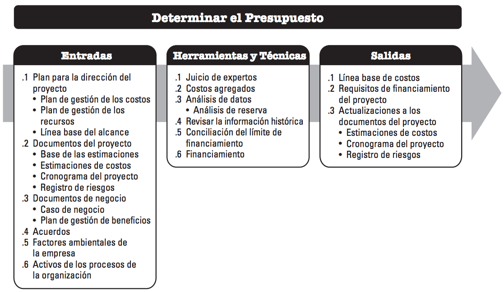
Figura 6. (PMBOK, 2017, pág. 248), Entradas, Herramientas y Técnicas y Salidas.
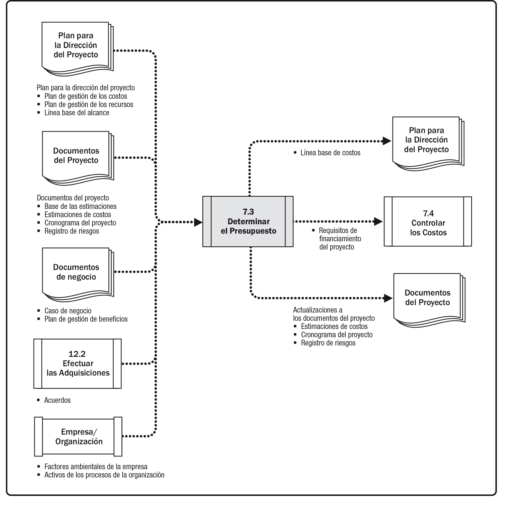
Figura 7. (PMBOK, 2017, pág. 249), Diagrama de flujo de datos de determinar el presupuesto.
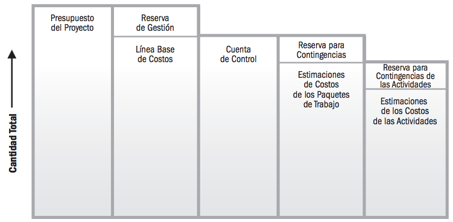
Figura 8. (PMBOK, 2017, pág. 255), Componentes del presupuesto del Proyecto.
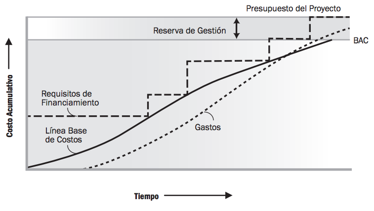
Figura 9. (PMBOK, 2017, pág. 255), Línea base de costo, gastos y requisitos de Financiamiento.
Se invita al estudiante a revisar detalladamente los conceptos del proceso: “Determinar el
presupuesto”, en el libro “A Guide to the Project Management Body of Knowledge” Pmbok Guide 6ª.
Edición Pág. 248 - 256
d. Controlar costos: es el proceso de monitorear el estado del proyecto para actualizar los
costos del proyecto y gestionar cambios a la línea base de costos. El beneficio clave de este proceso es que
la línea base de costos es mantenida a lo largo del proyecto. Este proceso se lleva a cabo a lo largo de todo
el proyecto.
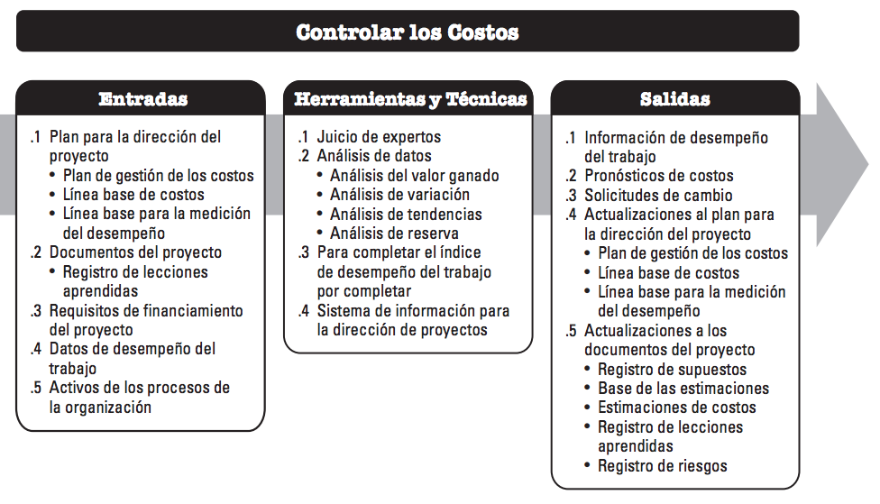
Figura 10. (PMBOK, 2017, pág. 257), Entradas, Herramientas y Técnicas y Salidas.
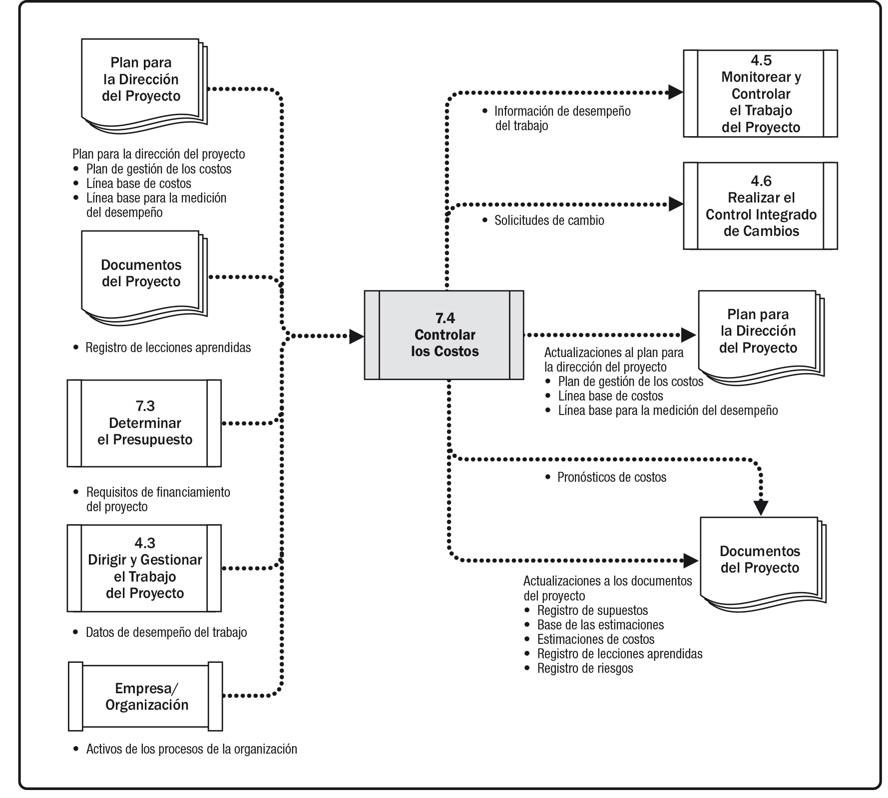
Figura 11. (PMBOK, 2017, pág. 258), Diagrama de flujo de datos.
Para actualizar el presupuesto es necesario conocer los costos reales en los que se ha incurrido hasta la
fecha. Cualquier incremento con respecto al presupuesto autorizado solo se puede aprobar a través del proceso
de realizar el control integrado de cambios.
Monitorear el gasto de fondos sin tener en cuenta el valor del trabajo que se está realizando y que
corresponde a ese gasto tiene poco valor para el proyecto, más allá de dar seguimiento a la salida de fondos.
Gran parte del esfuerzo de control de costos se dedica a analizar la relación entre los fondos del proyecto
consumidos y el trabajo efectuado correspondiente a dichos gastos. La clave para un control de costos eficaz
es la gestión de la línea base de costos aprobada.
El control de costos del proyecto incluye:
Influir sobre los factores que producen cambios a la línea base de costos autorizada;
Asegurar que todas las solicitudes de cambio se lleven a cabo de manera oportuna;
Gestionar los cambios reales cuando y conforme suceden;
Asegurar que los gastos no excedan los fondos autorizados por periodo, por componente de la EDT/WBS, por
actividad y para el proyecto en su totalidad;
Monitorear el desempeño del costo para detectar y comprender las variaciones con respecto a la línea base
de costos aprobada;
Monitorear el desempeño del trabajo con relación a los gastos en los que se ha incurrido;
Evitar que se incluyan cambios no aprobados en los informes sobre utilización de costos o de recursos;
Informar a los interesados pertinentes acerca de todos los cambios aprobados y costos asociados; y
Realizar las acciones necesarias para mantener los excesos de costos previstos dentro de límites
aceptables.
En el análisis del valor ganado, se puede monitorear e informar sobre tres parámetros (valor planificado,
valor ganado y costo real), por periodos (normalmente semanal o mensualmente) y de forma acumulativa. La
figura 12 emplea Curvas S para representar los datos del EV para un proyecto cuyo costo excede el presupuesto
y cuyo plan de trabajo está retrasado.
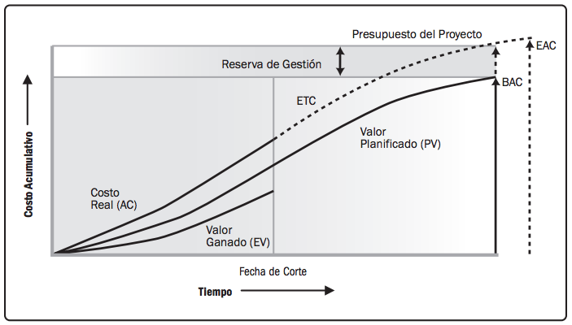
Figura 12. (PMBOK, 2017, pág. 264), Valor Ganado, Valor Planificado y Costos Reales.
Es de suma importancia conocer el índice de desempeño del trabajo por completar (TCPI) es una medida del
desempeño del costo que se debe alcanzar con los recursos restantes a fin de cumplir con un determinado
objetivo de gestión; se expresa como la tasa entre el costo para culminar el trabajo pendiente y el
presupuesto restante. El TCPI es la proyección calculada del desempeño del costo que debe
lograrse para el trabajo restante con el propósito de cumplir con una meta de gestión especificada, tal y como
sucede con el BAC o la EAC.
Si el CPI acumulativo cae por debajo de la línea base (como muestra en la figura 13), todo
el trabajo futuro del proyecto se tendrá que realizar inmediatamente en el rango del TCPI
(BAC) (como se muestra en la línea superior de la figura 13) para mantenerse dentro del rango del
BAC autorizado. El hecho de que este nivel de desempeño sea realizable o no es una decisión
subjetiva basada en diversas consideraciones, entre las que se encuentran los riesgos, el tiempo restante del
proyecto y el desempeño técnico.
Este nivel de desempeño se representa como la línea TCPI (EAC). La fórmula para el
TCPI está basada en el BAC: (BAC – EV) / (EAC – AC)
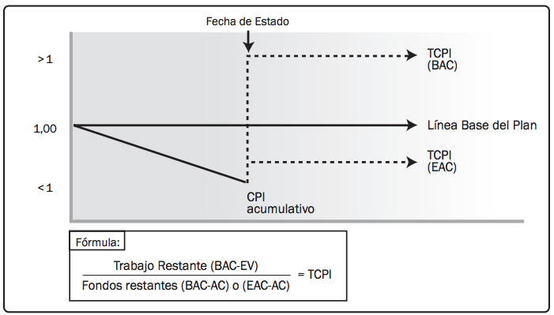
Figura 13. (PMBOK, 2017, pág. 268), Índice de desempeño del trabajo por complementar (TCPI).
Se invita al estudiante a revisar detalladamente los conceptos del proceso: “Controlar los costos”, en
el libro “A Guide to the Project Management Body of Knowledge” Pmbok Guide 6ª. Edición Pág. 257 - 270
Se invita al estudiante a visualizar los siguientes videos referente al tema “Gestión de los costos de
proyectos”:
Marlene Sanchez (2017). Monitoreo del Costo de un Proyecto. [Archivo de video]
Disponoble en: https://youtu.be/Ly-eBTWU6V8
3.2 COCOMO (COnstructive COst MOdel)
(Pressman, 2002), señala en su libro el siguiente análisis de COCOMO, de la siguiente
manera:
Bany Boehm, en su libro clásico sobre «economía de la ingeniería del software», introduce una
jerarquía de modelos de estimación de software con el nombre de COCOMO, por
Constructive Cost Model (Modelo Constructivo de Coste). El modelo COCOMO
original se ha convertido en uno de los modelos de estimación de coste del software más utilizados y
estudiados en la industria. El modelo original ha evolucionado a un modelo de estimación más completo llamado
COCOMO II. Al igual que su predecesor, COCOMO II es en realidad una
jerarquía de modelos de estimación que tratan las áreas siguientes:
Modelo de composición de aplicación. Utilizado durante las primeras etapas de la
ingeniería del software, donde el prototipado de las interfaces de usuario, la interacción del sistema y del
software, la evaluación del rendimiento, y la evaluación de la madurez de la tecnología son de suma
importancia.
Modelo de fase de diseño previo. Utilizado una vez que se han estabilizado los requisitos
y que se ha establecido la arquitectura básica del software.
Modelo de fase posterior a la arquitectura. Utilizado durante la construcción del
software.
Al igual que todos los modelos de estimación del software, el modelo COCOMO II descrito
antes necesita información del tamaño. Dentro de la jerarquía del modelo hay tres opciones de tamaño
distintas: puntos objeto, puntos de función, y líneas de código fuente.
El modelo de composición de aplicación COCOMO II utiliza los puntos objeto como se ilustra
en los párrafos siguientes. Debería señalarse que también están disponibles otros modelos de estimación más
sofisticados (utilizando PF y KLDC) que forman parte del COCOMO II.
Del mismo modo que los puntos de función, el punto objeto es una medida indirecta de software que se
calcula utilizando el total de:
Pantallas (de la interface de usuario)
Informes, y
Componentes que probablemente se necesiten para construir la aplicación.
Cada instancia de objeto (por ejemplo, una pantalla o informe) se clasifica en uno de los tres niveles de
complejidad (esto es, básico, intermedio, o avanzado) utilizando los criterios sugeridos por Boehm. En
esencia, la complejidad es una función del número y origen de las tablas de datos del cliente y servidor
necesario para generar la pantalla o el informe y el número de vistas o secciones presentadas como parte de la
pantalla o del informe.
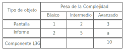
Figura 14. (Pressman, 2002, pág. 91), Factores de peso de la complejidad para tipos e objeto.
Una vez que se ha determinado la complejidad, se valora el número de pantallas, informes, y componentes de
acuerdo con la figura 14. La cuenta de punto objeto se determina multiplicando el número original de
instancias del objeto por el factor de peso de la figura 14 y se suman para obtener la cuenta total de punto
objeto.
Cuando se va a aplicar el desarrollo basado en componentes o la reutilización de software en general, se
estima el porcentaje de reutilización (% reutilización) y se ajusta la cuenta del punto objeto:
PON = (puntos objeto) x [(100 - % reutilización) /100]
Donde PON significa puntos objeto nuevos.
Para obtener una estimación del esfuerzo basada en el valor PON calculado, se debe calcular
la «proporción de productividad». La figura 15 presenta la proporción de productividad para los diferentes
niveles de experiencia del desarrollador y de madurez del entorno de desarrollo. Una vez determinada la
proporción de productividad, se puede obtener una estimación del esfuerzo del proyecto:
Esfuerzo estimado = PON / PROD
En modelos COCOMO II más avanzados, se requiere una variedad de factores de escala,
conductores de coste y procedimientos de ajuste. Un estudio completo de estos temas el lector interesado debe
de consultarlos en el libro (Boehm, 2000); (Pressman, 2002, pág. 91)
Ahora bien (Sommerville, 2005), señala lo siguiente sobre el modelo COCOMO:
Se han propuesto varios modelos algorítmicos como base para estimar el esfuerzo, agenda y costes de un
proyecto software. Estos son similares conceptualmente, pero utilizan diferentes valores en sus parámetros. El
modelo que se analiza aquí es el modelo COCOMO es un modelo empírico que se obtuvo
recopilando datos de varios proyectos grandes. Estos datos fueron analizados para descubrir las fórmulas que
mejor se ajustaban a las observaciones. Estas fórmulas vinculan el tamaño del sistema y del producto, factores
del proyecto y del equipo con el esfuerzo necesario para desarrollar el sistema.
Se ha elegido COCOMO por las siguientes razones:
Está bien documentado, es de dominio público y lo apoyan el dominio público y las herramientas
comerciales.
Se ha utilizado y evaluado ampliamente.
Tiene una gran tradición desde la primera versión en 1981, pasando por un refinamiento para el desarrollo
de software en ADA, hasta la versión más reciente, COCOMO II, publicada en
2000.
Los modelos COCOMO son comprensibles, con un gran número de parámetros, los cuales pueden
tomar un rango de valores. Estos son complejos y no se puede dar una descripción completa aquí. Basta una
simple exposición de las características esenciales para comprender los modelos algorítmicos de costes.
La primera versión del modelo COCOMO, COCOMO 81, fue un modelo de tres niveles donde estos
reflejan el detalle del análisis de la estimación del coste. El primer nivel (básico) provee una estimación
inicial burda, el segundo nivel la modifica utilizando una serie de multiplicadores de proyecto y proceso, y
el nivel más detallado produce estimaciones para las diferentes fases del proyecto. La figura 15 muestra la
formula básica de COCOMO como los diferentes tipos de proyectos. El multiplicador M refleja
características del producto y del personal.
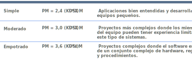
Figura 15. (Sommerville, 2005, pág. 572) , Modelo básico de COCOMO.
Teniendo en cuenta estos cambios, el modelo COCOMO II considera diferentes enfoques para el
desarrollo de software, como el de la construcción de prototipos, el desarrollo basado en componentes y el uso
de programación con base de datos. COCOMO II soporta el modelo de desarrollo en espiral y
engloba varios niveles que producen estimaciones detalladas de forma incremental. Estos pueden utilizarse en
sucesivas iteraciones en el desarrollo en espiral. La figura 16 muestra los niveles de COCOMO II y sus
recomendaciones de uso.
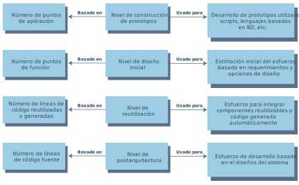
Figura 16. (Sommerville, 2005, pág. 573) , Los niveles de COCOMO II.
Los niveles de COCOMO II son los siguientes:
Da clic en cada uno de los títulos
para obtener más información.
Este presume que el sistema es creado mediante componentes reutilizables, scripts y programación de
base de datos. Fue diseñado para hacer estimaciones de desarrollo de prototipos. Las estimaciones de
tamaño del software están basadas en puntos de aplicación, y se utiliza una formula simple (tamaño /
productividad) para estimar el esfuerzo requerido.
Este nivel se utiliza en etapas tempranas del diseño del sistema, después de que los requerimientos
hayan sido establecidos. Las estimaciones están basadas en puntos de función, los cuales se
convierten a nuero de líneas de código.
Este nivel se utiliza para calcular el esfuerzo requerido para integrar componentes reutilizables
y/o el código que es automáticamente generado por herramientas de diseño o programas de traducción.
Normalmente es utilizado junto con el nivel de post – arquitectura.
Una vez diseñado el sistema, se puede hacer una estimación más precisa del tamaño del software.
Otra vez se utiliza la fórmula estándar para la estimación del coste expuesta anteriormente. Sin
embargo, esta incluye un conjunto de 17 multiplicadores que reflejan las habilidades del personal y
las características del producto y del proyecto.
Por supuesto, en sistemas grandes, diferentes partes pueden ser desarrolladas utilizando diversas
tecnologías, y que puede que no sea preciso estimar todas las partes con el mismo nivel de precisión. En estos
casos, se puede utilizar el modelo apropiado para cada parte del sistema y combinar los resultados para crear
una estimación del sistema completo.
Nivel de construcción de prototipos
El nivel de construcción de prototipos fue introducido en COCOMO II para dar soporte a la
estimación del esfuerzo requerido para el prototipado de proyectos y para proyectos en que el software se
desarrolla utilizando componentes existentes. Se basa en una estimación de los puntos de aplicación con pesos
(punto de objeto), la cual se divide entre una cifra estándar de la productividad estimada. Luego se ajusta la
estimación de acuerdo con la dificultad de desarrollo de cada punto de objeto. La productividad de programador
depende de la experiencia y de la capacidad del desarrollador. La figura 17 muestra los valores de
productividad sugeridos por los desarrolladores del modelo.
En este nivel, la reutilización es común, y algunos de los puntos de aplicación se pueden implementar con los
componentes reutilizables. En consecuencia, se deberá ajustar la estimación obtenida mediante el total de
puntos de aplicación, teniendo en cuenta el porcentaje de reutilización esperado. Por lo tanto, la fórmula
para el cálculo del esfuerzo para el prototipado del sistema es:
PM = (NAP X (1 - % reutilización / 100)) / PROD
PM es el esfuerzo estimado en personas / mes. NAP es el total de puntos de aplicación en el sistema a
desarrollar. % reutilización es una estimación de la cantidad de código reutilizado en el desarrollo. PROD es
la productividad medida en puntos objeto como se muestra en la figura 17. El modelo presupone que no hay
esfuerzo adicional derivado de la reutilización.
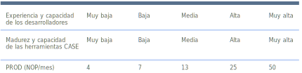
Figura 17. (Sommerville, 2005, pág. 574) , Productividad medida en puntos objeto.
Nivel de diseño inicial
Este nivel se utiliza cuando hemos acordado los requerimientos de usuario y se han iniciado las primeras
etapas del proceso de diseño. Sin embargo, no necesitamos una arquitectura detallada del diseño para realizar
estas estimaciones. La meta en este nivel es hacer una estimación aproximada sin demasiado esfuerzo. En
consecuencia, se asumirán simplificaciones, como que el esfuerzo de integrar el código reutilizable es cero.
Las estimaciones de diseño inicial son la opción más útil para evaluar distintas alternativas a fin de
implementar los requerimientos del usuario. Las estimaciones en este nivel están basadas en la formula
estándar para modelos algorítmicos:
Esfuerzo = A x TamañoB x M
Basándose en su gran cantidad de datos históricos, Boehm propone que el coeficiente A sea de
2.94, el tamaño del sistema es expresando en KSLOC, es decir el número de miles de líneas de código fuente.
Este se calcula estimando el número de puntos de función en el software, y convirtiendo este a KSLOC
utilizando tablas estándar, que relacionan el tamaño del software con los puntos de función dependiendo del
lenguaje de programación.
El exponente B refleja el esfuerzo creciente requerido al incrementarse el tamaño del proyecto. Este no se
fija para diferentes tipos de sistemas, como en el COCOMO 81, pero puede variar desde 1.1
hasta 1.24 dependiendo de la novedad del proyecto, la flexibilidad de desarrollo, los procesos utilizados para
la resolución de riesgos, la cohesión del equipo de desarrollo y el nivel de madurez del proceso de la
organización. La forma de calcular este exponente se muestra en la descripción del nivel de post arquitectura
del COCOMO II.
El multiplicador M en COCOMO II está basado en un conjunto simplificado de siete
características de proyecto y de proceso que influyen en la estimación. Este puede hacer que se incremente o
tenga decremento el esfuerzo requerido. Estas características utilizadas en el nivel de diseño inicial son
fiabilidad y complejidad del producto (RCPX), reutilización requerida (RUSE), la dificultad de la plataforma
(PDIF), la capacidad del personal (PERS), la experiencia del personal (PREX), agenda (SCED) y facilidades de
apoyo (FCIL). Estas se pueden estimar directamente sobre una escala de seis puntos donde 1 corresponde a
valores muy bajos de los multiplicadores y 6 corresponde a valores muy altos.
Esto nos lleva a la siguiente formula de esfuerzo:
PM – 2.94 x TamañoB x M
Donde:
M = PERS x RCPX x RUSE x PDIF x PREX x FCIL x SCED
Nivel de reutilización
Ahora es muy común reutilizar software, y los sistemas grandes tienen un porcentaje significativo de código
reutilizado de otros proyectos anteriores. Este nivel de reutilización se emplea para estimar el esfuerzo
requerido para integrar código reutilizable y código generado.
COCOMO II considera 2 tipos de código reutilizado. El código de caja negra es el código que
puede ser reutilizado sin entender el código ni teniendo que hacer cambios en el. El esfuerzo de desarrollo
para este tipo de código es 0. El código que ha de ser adaptado para integrarlo con el código nuevo u otros
componentes reutilizados recibe el nombre de código de caja blanca. Este supone un esfuerzo de desarrollo ya
que tendremos que entenderlo y modificarlo para que funcione correctamente en el sistema.
Además, muchos sistemas incluyen código generado automáticamente desde el modelo del sistema a través de
traductores automáticos. El generador posee unas plantillas estándar, el modelo del sistema es analizado, y el
código base es generado a partir de estas plantillas estándar y los datos del modelo. El nivel de
reutilización de COCOMO II incluye una parte específica para estimar los costes asociados a
este código generado automáticamente.
Para el código generado automáticamente, el modelo estima el número de personas / mes necesarias para
integrar este código. La fórmula para estimar el esfuerzo es:
PMAuto = (ASLOC x AT / 100) / ATPROD // Estimación para el código generado
AT es el porcentaje de código adaptado que se genera automáticamente y ATPROD es la productividad de los
ingenieros que integran dicho código, han medido ATPROD en torno a 2.400 líneas por mes. Por lo tanto, si hay
un total de 20.000 líneas de código reutilizado del tipo caja blanca en un sistema y un 30% de este se genera
automáticamente, entonces el esfuerzo requerido para integrar este código será:
(20.000 x 30/100) / 2400 = 2.5 personas/mes //Ejemplo de código generado
Por lo tanto, si 30.000 líneas de código han de ser reutilizadas, el tamaño nuevo equivalente estimado puede
ser 6.000. Esencialmente, reutilizar 30.000 líneas de código equivale a escribir 6.000 líneas de código nuevo.
La cifra calculada se suma al número de líneas de código nuevo a desarrollar del nivel de post arquitectura de
COCOMO II.
Las estimaciones en el nivel de reutilización son:
ASLOC – Número de líneas de código en los componentes que deben ser adaptados.
ESLOC – Número equivalente en líneas de código nuevo.
La siguiente formula se utiliza para calcular el número equivalente de líneas de código:
ESLOC = ASLOC x (1 – AT/100) x AAM
ASLOC se reduce de acuerdo con un porcentaje de código automáticamente generado. AAM es el multiplicador de
ajuste de la adaptación, el cual tiene en cuenta el esfuerzo requerido en la reutilización de código.
Básicamente, AAM es la suma de tres componentes:
Un componente de adaptación (llamado AAF) que representa el coste de hacer los cambios en el código
reutilizado. Este tiene en cuenta cambios de diseño, código e integración.
Un componente de compresión (llamado SU) que representa el coste de entender el código que se va a
reutilizar y la familiarización del ingeniero con el código. Los valores de SU van desde 50 para código
complejo no estructurado hasta 10 para código orientado a objetos bien escrito.
Un factor de cálculo (llamado AA) que representa el coste de la toma de decisiones para la reutilización.
Esto es, necesario algún análisis para decidir qué código puede ser reutilizado. AA varía entre 0 y 8 según
la cantidad de esfuerzo necesaria.
El nivel de reutilización no es un modelo lineal. Necesitaremos esfuerzo si la reutilización se considera
como hacer una valoración de si es posible la reutilización. Por lo tanto, cuanta más reutilización se
contemple, los costes de reutilización por unidad de código reutilizado serán mayores.
Nivel de post arquitectura
El nivel de post arquitectura es el nivel más detallado de todos del COCOMO II. Se utiliza
una vez que conocemos el diseño arquitectónico del sistema, es decir cuando conocemos la estructura de
subsistemas.
Las estimaciones producidas en el nivel de post arquitectura están basadas en la misma fórmula básica (PM = A
x TamañoB x M) utilizada en las estimaciones de diseño inicial. Sin embargo, la estimación del
tamaño del software deberá ser más precisa en esta etapa del proceso de desarrollo, y se utiliza un conjunto
más extenso de atributos (17 en lugar de 7) de producto, proceso y organización para refinar el cálculo del
esfuerzo inicial. ES posible utilizar más atributos, ya que tenemos más información en esta etapa acerca del
proceso de desarrollo y del producto.
La estimación del número de líneas de código se calcula utilizando tres componentes:
Una estimación del número total de líneas nuevas de código a desarrollar.
Una estimación del número de líneas de código fuente equivalentes (ESLOC) calculadas usando el nivel de
reutilización.
Una estimación del número de líneas de código que tienen que modificarse debido a cambios en los
requerimientos. (Sommerville, 2005, págs. 572 - 580)
Se invita al estudiante a leer las páginas 577 – 580 de libro (Sommerville, 2005), para mayor comprensión del
tema.
El tener una medida objetiva que pueda medir de manera exacta las estimaciones de esfuerzo, son resultado de
la herramienta puntos de función.
(Busquelle, 2010), señala lo siguiente correspondiente a los puntos de función o líneas de código, como
sigue:
A menudo se afirma que no se puede gestionar lo que no se puede medir. Las métricas de puntos
de función han sido utilizadas con éxito para medir el tamaño del software y, como resultado, para determinar
las tasas de entrega y métricas de calidad. Se trata de un método de sintético que proporciona una metodología
para calcular el tamaño relativo de las aplicaciones o subsistemas individuales (Desharnais, 1988). Una medida
de unidad de trabajo debe ser capaz de cuantificar con precisión la funcionalidad ―valor― que se entrega al
cliente.
Cuando un usuario especifica una funcionalidad deseada, la unidad de trabajo debe medir que
funcione de forma directa, por ejemplo, el usuario pide un widget, y eso es exactamente lo que se mide (IFPUG,
2000). El método de puntos de función ha demostrado ser un medio eficaz para establecer una medida
significativa de las unidades de trabajo y puede ser utilizado para establecer los costos base y monitorear el
nivel de rendimiento. El análisis de puntos de función se orienta a medir el tamaño de cualquier software, en
términos orientados al usuario (Stutzke, 2005). En lugar de contar las líneas de código, el análisis de puntos
de función mide la funcionalidad que debe ser entregada al usuario final.
Determinar el tamaño de la funcionalidad del sistema y medir el rendimiento de los equipos del proyecto es la
base de proyectos exitosos. En la actualidad, numerosas organizaciones en todo el mundo utilizan el método de
Análisis de puntos de función ―Function Point Analysis FPA―, para determinar el tamaño de los proyectos
software, y que tiende a convertirse en un estándar mundial. El resultado del Análisis de Puntos de Función es
la base para determinar el rendimiento ―productividad, velocidad de respuesta y calidad. El método de medición
es especialmente adecuado para aplicaciones con procesamiento amplio de datos. FPA mide el software
cuantificando la funcionalidad proporcionada al usuario basado principalmente en los requisitos funcionales.
La medida es independiente de la plataforma de desarrollo utilizada y la forma como se especifica la
funcionalidad, el producto entregado es el resultado de su utilización (Austin, 1996). Según las definiciones
de un método de medición de tamaño funcional, en FPA los Functional User Requirements ―FUR― es la base para la
medición. Se analizan las especificaciones de los FUR y se identifican los procesos funcionales pertinentes.
Después los procesos funcionales se dividen en unidades medibles: los Base Functional Components ―BFC―, se
valoran según las normas y definiciones del método, y el resultado es la medida del tamaño de los BFC. La suma
de los resultados indica el tamaño de la aplicación.
El Análisis de los puntos de función es la medida del tamaño de las funciones de usuario ―BFC― de la
aplicación o de parte de ella. Las funciones de usuario son los componentes solicitados y reconocidos por el
usuario, que se toman de las especificaciones que describen lo que el software debe hacer para satisfacer las
necesidades del mismo ―Functional User Requirements, FUR. Se trata de la funcionalidad que el software debe
proporcionar, no cómo será implementado. El tamaño de una función de usuario se determina con base en su
complejidad (IFPUG, 2000).
Las Funciones de Usuario se dividen en dos grupos:
Archivos lógicos. Un archivo lógico es un grupo de datos relacionados lógicamente e identificados por el
usuario; FPA reconoce dos tipos:
a) Internal Logical File ―ILF―, un archivo lógico que reside completamente dentro del
límite de aplicación y que es mantenido a través de entradas externas;
b) External Interface File ―EIF―, un archivo lógico que se utiliza exclusivamente con
propósitos de referencia.
Transacciones: Una transacción es un conjunto de acciones consecutivas vistas como una unidad coherente de
trabajo. FPA diferencia tres tipos de transacciones:
a. External Input ―EI―, un proceso simple en el que los datos atraviesan los límites del
sistema desde afuera hacia adentro;
b. External Output ―EO―, es un proceso simple en el que los datos derivados atraviesan los
límites del sistema desde adentro hacia afuera; y
c. External Inquiry ―EQ―, un proceso simple en el que los datos recuperados atraviesan los
límites del sistema desde adentro hacia afuera.
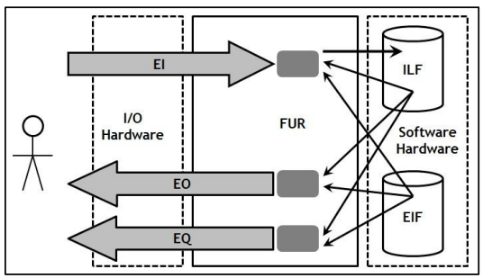
Figura 18. (Busquelle, 2010, pág. 60) Funciones de Usuario.
La complejidad de una función de usuario se determina utilizando la tabla de la complejidad de cada tipo, y
depende del número de elementos de datos ―Number of Data Elements, DET― y el número de tipos de archivos
lógicos referenciados ―Number of Logical File Types Referenced, FTR― e identificados en la función de usuario.
Existen tres niveles de complejidad: baja, media y alta.
Luego que se determina la complejidad de la función de usuario, el número de puntos de función se asignará a
la función de usuario. En la figura 19 de traducción de la complejidad se muestra la transformación de
valores.
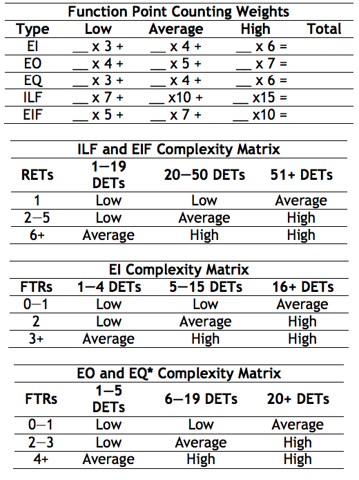
Figura 19. (Busquelle, 2010, pág. 60) Traducción de la complejidad.
Un EQ puede tener más de un FTR.
Los DTEs son equivalentes a campos no repetidos o atributos.
Los RETs son equivalentes a sub―grupos obligatorios u opcionales.
Los FRTs son equivalentes a ILFs o EIFs referenciados por esta transacción.
El tamaño de la aplicación es la suma de los puntos de función de las funciones de usuario incluidas.
El cálculo final de los puntos de función es un número que representa el valor total de la funcionalidad que
se está entregando. Una vez completado, el tamaño de los puntos función de una aplicación o un nuevo proyecto
de desarrollo pueden comunicarse de varias formas Figura 20. Como un valor independiente, el tamaño en puntos
función de un sistema dice cuán grande es el software que se realizará (Goethert et al., 1996). Cuando el
valor de los puntos de función es segmentado en una visualización más detallada, puede comunicarse a los
usuarios finales el valor funcional de los componentes específicos del sistema.
Finalmente, las organizaciones que han alcanzado un cierto nivel de madurez en la medición del software
pueden utilizar los puntos de función para predecir los resultados y monitorear el progreso del programa
(Kiminobu, 2006).
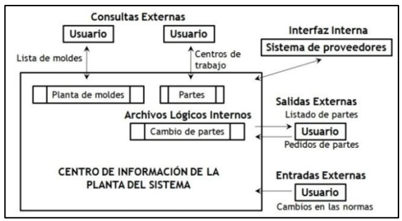
Figura 20. (Busquelle, 2010, pág. 60) Identificación de los elementos funcionales.
Como los proyectos son completados y los entregables de software producidos, el tamaño de los puntos de
función, junto con una colección de otras medidas significativas, se utilizan para producir una línea base de
rendimiento. Estas otras medidas pueden incluir nivel de esfuerzo, costo, duración y calidad. A partir de
dicha línea se pueden derivar un costo por unidad de funcionalidad entregada (Diab, et al. 2002). El costo
asociado con la producción de la prestación requerida o el servicio de soporte se divide por el número total
de entregables, ampliando o soportando los puntos de función. El resultado es un costo por punto de función o
un costo por unidad de trabajo.
La línea base de los niveles de rendimiento organizacionales se convierte en una práctica estándar de la
industria, particularmente en compañías en las que la organización de IT se requiere para avanzar y mejorar la
prestación de productos y servicios en relación con mejorar el tiempo en el mercado, la reducción de costos y
la satisfacción del cliente.
La creación de una línea base de rendimiento en IT a menudo denominado "benchmarking" le ofrece a una
organización la información que necesita para dirigir adecuadamente sus iniciativas de desarrollo y monitorear
los progresos de los contratos outsourcing.
Ventajas del análisis de puntos de función:
Ofrece una idea de la funcionalidad, del tamaño de la funcionalidad y del presupuesto necesario.
Soporta la elaboración de una planificación realista.
Es objetivo y fácil de usar.
Soporta la comunicación entre la administración, los usuarios y proveedores.
Y como conclusión de los puntos de función es la de establecer un costo por unidad de trabajo entregado es
una medida crítica en la gestión exitosa y el seguimiento de los acuerdos del outsourcing. El método de puntos
de función permite la creación de una medida de unidad de trabajo para supervisar tanto el costo de
funcionamiento como la prestación funcional. Esta medida puede satisfacer tanto las necesidades de la
organización en IT para supervisar los acuerdos del outsourcing y las necesidades del usuario para garantizar
el valor de la prestación. Además, el uso de puntos función provee la oportunidad de hacer comparaciones con
los niveles de rendimiento de la industria. (Busquelle, 2010, págs. 60 - 61)
Se invita al estudiante a visualizar los siguientes videos referente al tema “Puntos de Función”:
Patricio Pérez Pinto (2015). Análisis de puntos de función + EJEMPLO [1/3]. [Archivo de
video] Disponoble en: https://youtu.be/BeP6dXdLLo8
Patricio Pérez Pinto (2015). Análisis de puntos de función + EJEMPLO [2/3]. [Archivo de
video] Disponoble en: https://youtu.be/GWuYmAbdycA
Patricio Pérez Pinto (2015). Análisis de puntos de función + EJEMPLO [3/3]. [Archivo de
video] Disponoble en: https://youtu.be/0wbALQ9lz7o
Fatto Consultoría y Sistemas (2013). Qué es Análisis de Puntos de Función. [Archivo de
video] Disponoble en: https://youtu.be/y0TNSR8Lnxg
Se recomienda que para mejor comprensión y entendimiento de los temas de la unidad 3, acuda a los capítulos
dedicados y desarrollados a cada uno de los temas señalados en las bibliografías marcadas, para que tenga un
panorama más amplio.
Y para solventar dudas puntuales acudir con el docente asignado.
Cierre de unidad
En esta unidad se conoce la importancia que tiene la gestión de costos en el desarrollo de proyectos y como
los puntos de función ayudan a utilizar la herramienta COCOMO para la estimación de costos, que nos brinda
tiempos, y los perfiles de personal que se requieren para el desarrollo de proyectos, que ayudaran a conseguir
la culminación de nuestro proyecto de acuerdo con las fechas establecidas.
Así mismo que estos aspectos son parte medular del alcance de nuestro proyecto y del cierre del mismo o del
cierre de las fases ya determinadas.
Y esto servirá para apoyar las fases que vienen en la siguiente unidad, que nos permite aprobar el cierre del
proyecto o fase y validar el alcance marcado en la planeación inicial, no dejando de lado los posibles riesgos
que se presentan a lo largo del desarrollo del proyecto y que se tendrá que solucionar oportunamente.
Fuentes de
consulta
Boehm, B. (2000). Software Cost Estimation in COCOMO II. Prentice Hall.
Busquelle, J. (2010). Análisis de puntos de Función. Obtenido de
https://dialnet.unirioja.es/descarga/articulo/3399349.pdf
Fatto Consultoría y Sistemas. (07 de 06 de 2013). Youtube. Obtenido de
https://www.youtube.com/watch?v=y0TNSR8Lnxg
IngenieriaNICA. (08 de 11 de 2011). Ingenieria NICA. Obtenido de
https://www.youtube.com/watch?v=SRwwTLfcgsE
Pérez Pinto, P. (25 de 05 de 2015). Youtube. Obtenido de https://www.youtube.com/watch?v=BeP6dXdLLo8
Pérez Pinto, P. (25 de 05 de 2015). Youtube. Obtenido de https://www.youtube.com/watch?v=GWuYmAbdycA
Pérez Pinto, P. (25 de 05 de 2015). Youtube. Obtenido de https://www.youtube.com/watch?v=0wbALQ9lz7o
PMBOK, G. d. (2017). A guide to the Project Management Body of Knowledge PMBOK GUIDE. Pennsylvania:
Project Management Institute, Inc.
Pressman, R. (2002). Ingeniería del software. México: Mc Graw Hill.
RISI. (2004). Facultad de Ingeniería de Sistemas e Informática. Obtenido de
https://revistasinvestigacion.unmsm.edu.pe/index.php/
Sanchez, M. (04 de 10 de 2017). YouTube. Obtenido de https://www.youtube.com/watch?v=_0w_Haw8RxY
Sánchez, M. (07 de 11 de 2017). YouTube. Obtenido de
https://www.youtube.com/watch?v=Ly-eBTWU6V8&list=PLr1buX62bHiRfhTwM9U6LqGzJyyf0v_za&index=1
UniversidadVeracruzana. (s.f.). Facultad de Estadística e informática. Obtenido de
https://www.uv.mx/personal/ermeneses/files/2017/08/Clase9-COCOMOII.pdf
 Presentación de unidad
Presentación de unidad Objetivo de
unidad
Objetivo de
unidad Da clic en cada uno de los títulos
para obtener más información.
Da clic en cada uno de los títulos
para obtener más información. Fuentes de
consulta
Fuentes de
consulta